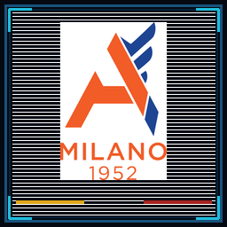
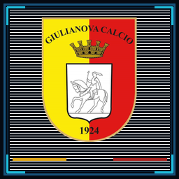
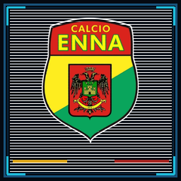
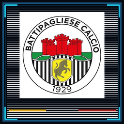
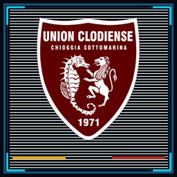
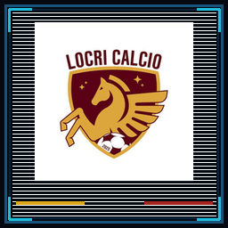

THE BROADCAST FROM AN ALTERNATE 1992
KICK
OFF.
Il calcio. Il segnale. La competizione.

LEAGUE · TURNO DEMO 06FINALE · DEMO

AlcioneMilano
2:1

Giulianova14′ · 68′82′
Apri Match Center THE FUTURE
OF FOOTBALL.
As imagined in 1992.
Apri l’archivioDAL CAMPO
Tutti i risultati
FINALEGiulianova0 : 0Battipagliese
FINALE
Union Clodiense1 : 3Locri
ARCADE LADDER
DATA TRANSFER